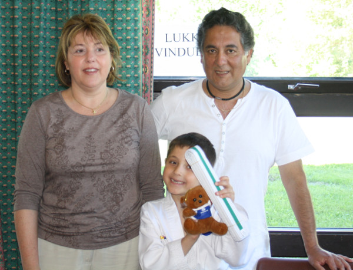

Innlegg
Intervju med Rebeca Del Rey

Rebeca Del Rey som er mor til Adrian Villagran Del Rey sa at etter at Adrian hadde startet på Tae Kwon Do so hadde han lært å være mere konsentrert både hjemme og på skolen. Han har lært disiplin gjennom Tae Kwon Do. Hun var glad for at Adrian går på Tae Kwon Do og hun håper på at han kommer til å fortsette.
Etter at jeg hadde spurt moren snakket jeg litt med Adrian. Han var glad for å drive med Tae Kwon Do og han hadde tenkt å fortsette. Han var glad for å kunne lære nye ting og stolt for at han kunne vise at han fortjente en ny beltegrad. Han driver med Tae Kwon Do for å lære nye ting og for å få seg nye venner og han har lært å samarbeide med andre på trening.